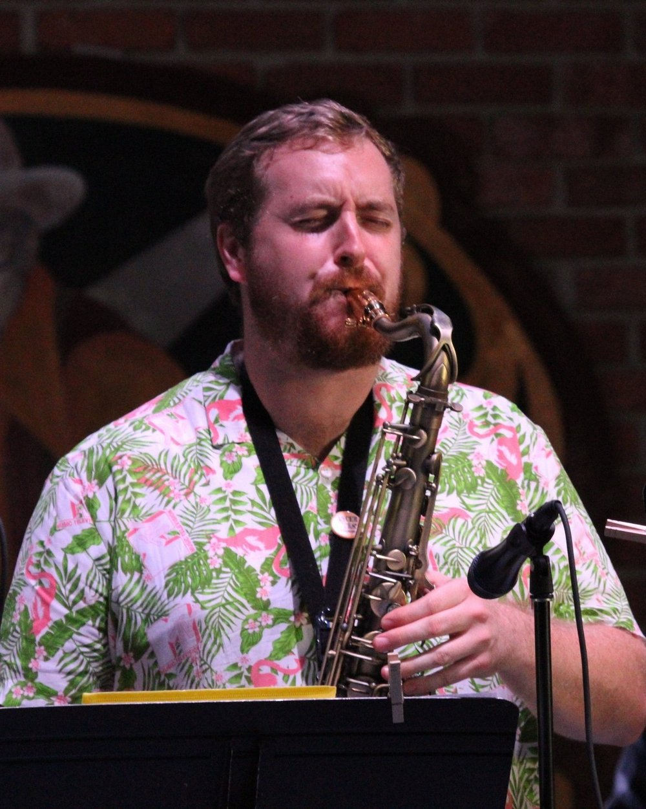

Andrew Vogel
saxophonist, educator, ethnomusicologist
Andrew Vogel is a saxophonist, educator, and researcher from St. Louis, Missouri. He holds a PhD in Ethnomusicology with a cognate in Anthropology from the University of Florida. His dissertation focused on the circulation of ska in Mexico and southern California, cultural ownership, and identity. Other areas of interest include jazz studies, popular music studies, and the anthropology of race.
